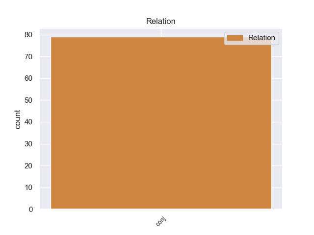
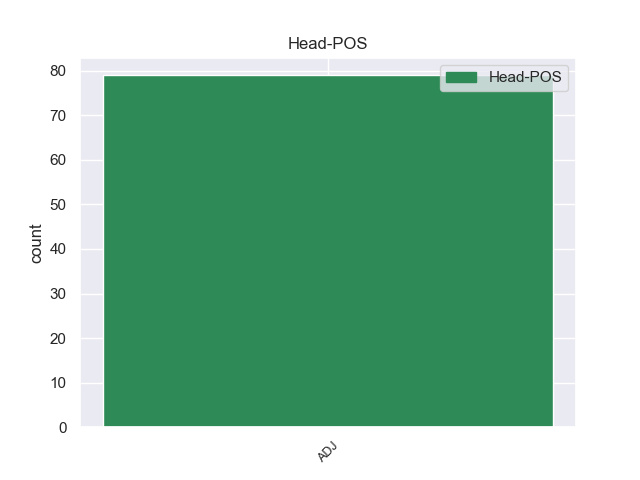
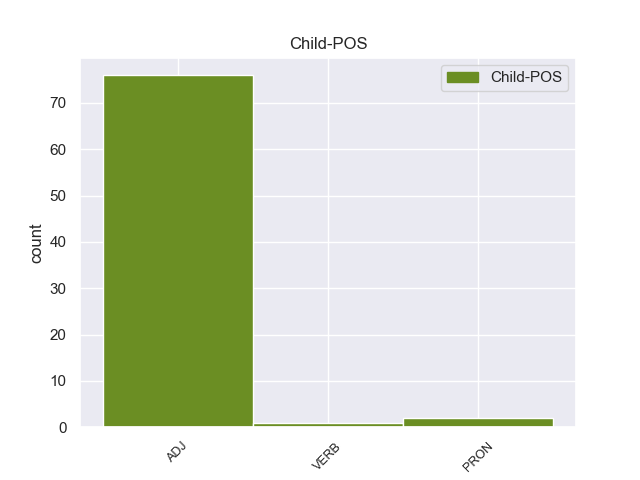

Distribution of features within this leaf



Agreement Rules sorted by frequency.
- When the dependent token is the conjunct(conj) of the head token, and the head token is ADJ and the dependent token is ADJ.
1 Τα _ _ _ _ 0 _ _ _
2 εγκλήματα _ _ _ _ 0 _ _ _
3 είναι _ _ _ _ 0 _ _ _
4 σοβαρά _ _ _ _ 0 _ _ _
5 και _ _ _ _ 0 _ _ _
6 ανήκουν _ _ _ _ 0 _ _ _
7 σε _ _ _ _ 0 _ _ _
8 μια _ _ _ _ 0 _ _ _
9 κατηγορία _ _ _ _ 0 _ _ _
10 για _ _ _ _ 0 _ _ _
11 την _ _ _ _ 0 _ _ _
12 οποία _ _ _ _ 0 _ _ _
13 κανονικά _ _ _ _ 0 _ _ _
14 δεν _ _ _ _ 0 _ _ _
15 προσφέρεται _ _ _ _ 0 _ _ _
16 βουλευτική _ _ _ _ 0 _ _ _
17 ασυλία _ _ _ _ 0 _ _ _
18 , _ _ _ _ 0 _ _ _
19 επειδή _ _ _ _ 0 _ _ _
20 δεν _ _ _ _ 0 _ _ _
21 αφορούν _ _ _ _ 0 _ _ _
22 τις _ _ _ _ 0 _ _ _
23 συνήθεις συνήθης ADJ -- Case=Acc|Gender=Fem|Number=Plur 0 _ _ _
24 και _ _ _ _ 0 _ _ _
25 προσήκουσες προσήκων ADJ -- Case=Acc|Gender=Fem|Number=Plur 23 conj _ _
26 δραστηριότητες _ _ _ _ 0 _ _ _
27 βουλευτή _ _ _ _ 0 _ _ _
28 του _ _ _ _ 0 _ _ _
29 Σώματος _ _ _ _ 0 _ _ _
30 , _ _ _ _ 0 _ _ _
31 ή _ _ _ _ 0 _ _ _
32 πολιτικού _ _ _ _ 0 _ _ _
33 που _ _ _ _ 0 _ _ _
34 δραστηριοποιείται _ _ _ _ 0 _ _ _
35 σε _ _ _ _ 0 _ _ _
36 μια _ _ _ _ 0 _ _ _
37 δημοκρατική _ _ _ _ 0 _ _ _
38 κοινωνία _ _ _ _ 0 _ _ _
39 . _ _ _ _ 0 _ _ _
1 Χρειαζόμαστε _ _ _ _ 0 _ _ _
2 έξυπνες έξυπνος ADJ -- Case=Acc|Gender=Fem|Number=Plur 0 _ _ _
3 και _ _ _ _ 0 _ _ _
4 διαφοροποιημένες διαφοροποιώ VERB -- Aspect=Perf|Case=Acc|Gender=Fem|Number=Plur|VerbForm=Part|Voice=Pass 2 conj _ _
5 λύσεις _ _ _ _ 0 _ _ _
6 , _ _ _ _ 0 _ _ _
7 όπως _ _ _ _ 0 _ _ _
8 π.χ. _ _ _ _ 0 _ _ _
9 την _ _ _ _ 0 _ _ _
10 ευελιξία _ _ _ _ 0 _ _ _
11 του _ _ _ _ 0 _ _ _
12 χρόνου _ _ _ _ 0 _ _ _
13 εργασίας _ _ _ _ 0 _ _ _
14 προσαρμοσμένη _ _ _ _ 0 _ _ _
15 σ _ _ _ _ 0 _ _ _
16 τις _ _ _ _ 0 _ _ _
17 ανάγκες _ _ _ _ 0 _ _ _
18 των _ _ _ _ 0 _ _ _
19 διαφόρων _ _ _ _ 0 _ _ _
20 κλάδων _ _ _ _ 0 _ _ _
21 και _ _ _ _ 0 _ _ _
22 περιοχών _ _ _ _ 0 _ _ _
23 . _ _ _ _ 0 _ _ _
1 Πρέπει _ _ _ _ 0 _ _ _
2 να _ _ _ _ 0 _ _ _
3 χρησιμοποιούμε _ _ _ _ 0 _ _ _
4 σωστά _ _ _ _ 0 _ _ _
5 το _ _ _ _ 0 _ _ _
6 χρήμα _ _ _ _ 0 _ _ _
7 - _ _ _ _ 0 _ _ _
8 φυσικά _ _ _ _ 0 _ _ _
9 για _ _ _ _ 0 _ _ _
10 την _ _ _ _ 0 _ _ _
11 αύξηση _ _ _ _ 0 _ _ _
12 των _ _ _ _ 0 _ _ _
13 υποδομών _ _ _ _ 0 _ _ _
14 , _ _ _ _ 0 _ _ _
15 για _ _ _ _ 0 _ _ _
16 την _ _ _ _ 0 _ _ _
17 παροχή _ _ _ _ 0 _ _ _
18 καλύτερων _ _ _ _ 0 _ _ _
19 υπηρεσιών _ _ _ _ 0 _ _ _
20 και _ _ _ _ 0 _ _ _
21 για _ _ _ _ 0 _ _ _
22 τη _ _ _ _ 0 _ _ _
23 μεγαλύτερη _ _ _ _ 0 _ _ _
24 δυνατή _ _ _ _ 0 _ _ _
25 αύξηση _ _ _ _ 0 _ _ _
26 της _ _ _ _ 0 _ _ _
27 τοπικής _ _ _ _ 0 _ _ _
28 απασχόλησης _ _ _ _ 0 _ _ _
29 - _ _ _ _ 0 _ _ _
30 δεν _ _ _ _ 0 _ _ _
31 πρέπει _ _ _ _ 0 _ _ _
32 όμως _ _ _ _ 0 _ _ _
33 να _ _ _ _ 0 _ _ _
34 χρησιμοποιείται _ _ _ _ 0 _ _ _
35 απλώς _ _ _ _ 0 _ _ _
36 ως _ _ _ _ 0 _ _ _
37 υποκατάστατο _ _ _ _ 0 _ _ _
38 για _ _ _ _ 0 _ _ _
39 τις _ _ _ _ 0 _ _ _
40 ιδιωτικές ιδιωτικός ADJ -- Case=Acc|Gender=Fem|Number=Plur 0 _ _ _
41 και _ _ _ _ 0 _ _ _
42 άλλες άλλος PRON -- Case=Acc|Gender=Fem|Number=Plur|Person=3|PronType=Ind 40 conj _ _
43 επενδύσεις _ _ _ _ 0 _ _ _
44 ή _ _ _ _ 0 _ _ _
45 για _ _ _ _ 0 _ _ _
46 άλλες _ _ _ _ 0 _ _ _
47 πρωτοβουλίες _ _ _ _ 0 _ _ _
48 δημιουργίας _ _ _ _ 0 _ _ _
49 τοπικών _ _ _ _ 0 _ _ _
50 θέσεων _ _ _ _ 0 _ _ _
51 απασχόλησης _ _ _ _ 0 _ _ _
52 . _ _ _ _ 0 _ _ _
Disagree Examples:
1 Η _ _ _ _ 0 _ _ _
2 εκστρατεία _ _ _ _ 0 _ _ _
3 είναι _ _ _ _ 0 _ _ _
4 αποτέλεσμα _ _ _ _ 0 _ _ _
5 συνομιλιών _ _ _ _ 0 _ _ _
6 ελληνικών ελληνικός ADJ -- Case=Gen|Gender=Fem|Number=Plur 0 _ _ _
7 και _ _ _ _ 0 _ _ _
8 γερμανικών γερμανικός ADJ -- Case=Gen|Gender=Masc|Number=Plur 6 conj _ _
9 φορέων _ _ _ _ 0 _ _ _
10 τουρισμού _ _ _ _ 0 _ _ _
11 . _ _ _ _ 0 _ _ _
1 Για _ _ _ _ 0 _ _ _
2 να _ _ _ _ 0 _ _ _
3 απαντήσω _ _ _ _ 0 _ _ _
4 σ _ _ _ _ 0 _ _ _
5 τον _ _ _ _ 0 _ _ _
6 κ. _ _ _ _ 0 _ _ _
7 Rapkay _ _ _ _ 0 _ _ _
8 και _ _ _ _ 0 _ _ _
9 σ _ _ _ _ 0 _ _ _
10 τον _ _ _ _ 0 _ _ _
11 κ. _ _ _ _ 0 _ _ _
12 Hughes _ _ _ _ 0 _ _ _
13 , _ _ _ _ 0 _ _ _
14 σκοπός _ _ _ _ 0 _ _ _
15 των _ _ _ _ 0 _ _ _
16 οδηγιών _ _ _ _ 0 _ _ _
17 περί _ _ _ _ 0 _ _ _
18 δημοσίων _ _ _ _ 0 _ _ _
19 συμβάσεων _ _ _ _ 0 _ _ _
20 είναι _ _ _ _ 0 _ _ _
21 ο _ _ _ _ 0 _ _ _
22 συντονισμός _ _ _ _ 0 _ _ _
23 των _ _ _ _ 0 _ _ _
24 διαδικασιών _ _ _ _ 0 _ _ _
25 για _ _ _ _ 0 _ _ _
26 την _ _ _ _ 0 _ _ _
27 ανάθεση _ _ _ _ 0 _ _ _
28 μίας _ _ _ _ 0 _ _ _
29 σύμβασης _ _ _ _ 0 _ _ _
30 και _ _ _ _ 0 _ _ _
31 όχι _ _ _ _ 0 _ _ _
32 ο _ _ _ _ 0 _ _ _
33 καθορισμός _ _ _ _ 0 _ _ _
34 των _ _ _ _ 0 _ _ _
35 υποχρεώσεων _ _ _ _ 0 _ _ _
36 - _ _ _ _ 0 _ _ _
37 κοινωνικών κοινωνικός ADJ -- Case=Gen|Gender=Fem|Number=Plur 0 _ _ _
38 ή _ _ _ _ 0 _ _ _
39 άλλων άλλος PRON -- Case=Gen|Gender=Neut|Number=Plur|Person=3|PronType=Ind 37 conj _ _
40 - _ _ _ _ 0 _ _ _
41 με _ _ _ _ 0 _ _ _
42 τις _ _ _ _ 0 _ _ _
43 οποίες _ _ _ _ 0 _ _ _
44 πρέπει _ _ _ _ 0 _ _ _
45 να _ _ _ _ 0 _ _ _
46 συμμορφώνονται _ _ _ _ 0 _ _ _
47 οι _ _ _ _ 0 _ _ _
48 ιδιώτες _ _ _ _ 0 _ _ _
49 ανάδοχοι _ _ _ _ 0 _ _ _
50 αφ' _ _ _ _ 0 _ _ _
51 ης _ _ _ _ 0 _ _ _
52 στιγμής _ _ _ _ 0 _ _ _
53 ανατεθεί _ _ _ _ 0 _ _ _
54 η _ _ _ _ 0 _ _ _
55 σύμβαση _ _ _ _ 0 _ _ _
56 . _ _ _ _ 0 _ _ _